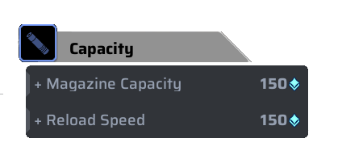
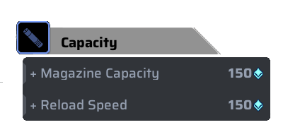

Skills
Active Skill: Pulse Blade

Type: Detect
Lawine throws a Pulse Blade that creates a electromagnetic field that scan and exposes all nearby enemies. The Plse Blade will vanish upon failing to detect enemies in its vicinity or after 3 local scans.
Details
- Cooldown: 30 Seconds
- Revealed Duration: 3/5 when upgraded
- Can be destroyed
How to play
Passive Skill: Shadow Reveal

Type: Detect
Any enemies hit by lawine primary gun gets exposed to her
Details
- Revealed Duration: 3/5 when upgraded
How to play
Ultimate Skill: Stealth Master

Type: Stealth
Lawine creates a steath zone and becomes invisible upon entering it, but she cant fire in the zone. Any enemies that enter or exit the zone will be exposed to lawine
Details
- Cost: 6 Ultimate Point
- Duration: 30 Seconds
- Revealed Duration: 30 Seconds

 
